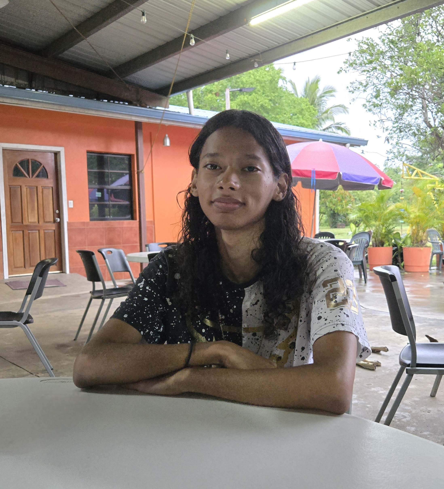

About Me

My name is Krystian A Crawford and I am a student at the University of Belize. I'm doing my associates in IT currently, and after that, my plan from then is to further my skills to pursue a job abroad primarily. I am striving to further my knowledge about computer science as much as possible; I'm living at Belmopan, Cayo, and I enjoy tinkering with programs and slowly learning how they function, I also enjoy playing games. Currently I am trying to learn is game dev as it is something that I enjoy doing and would love to be able to learn the skill.